9. References
[1] RoboMaster Organizing Committee, RoboMaster 2027 机甲大师高校联盟赛比赛规则手册 (RMUL Competition Rules Manual), ver. 1.0.0. DJI, Oct. 15, 2026.
[2] RoboMaster Organizing Committee, RoboMaster 2027 机甲大师高校系列赛机器人制作规范手册 (Robot Construction Specifications Manual), ver. 1.0.0. DJI, Oct. 15, 2026.
[3] RoboMaster Organizing Committee, RoboMaster 2027 机甲大师高校联盟赛参赛手册 (RMUL Participation Manual), ver. 1.0.0. DJI, Oct. 15, 2026.
[4] RoboMaster Organizing Committee, RoboMaster 2026 机甲大师高校联盟赛比赛规则手册 (RMUL Competition Rules Manual), ver. 1.2.0. DJI, Jan. 9, 2026.
[5] RoboMaster Organizing Committee, RoboMaster 2026 机甲大师高校系列赛机器人制作规范手册 (Robot Construction Specifications Manual), ver. 1.3.0. DJI, Feb. 9, 2026.
[6] RoboMaster Organizing Committee, “RoboMaster 2026高校系列赛规则答疑公示面板” (RoboMaster 2026 University Series Rules Q&A Public Board), Qingflow, response ID 799027037. [Online]. Available:. [Accessed: Oct. 27, 2026].
[7] “Bilibili video BV1m5AgzeERu,” Bilibili, [Online video]. Available:. [Accessed: Oct. 27, 2026].
[8] “Bilibili video BV19ASUBEEhA,” Bilibili, [Online video]. Available:. [Accessed: Oct. 27, 2026].
[9] “Robot Design Report,” ASI-405, GitHub Pages. [Online]. Available:. [Accessed: Oct. 28, 2026].
[10] “ASI-404: Mobile Manipulator for the IDP Hub,” GitHub Pages. [Online]. Available:. [Accessed: Oct. 28, 2026].
[11] Shanghai Jiao Tong University Jiaolong Team, “RM2025串联腿平衡步兵机械开源” [RM2025 Serial-Leg Balancing Infantry Robot: Open-Source Mechanical Design], technical report, n.d.
[12] H. Sun, “结构件设计流程经验总结” [Summary of Structural Component Design Processes and Experience], Shanghai Jiao Tong University Jiaolong Team, technical report, n.d.
[13] L. A. T. Vu, Z. Bi, D. Mueller, and N. Younis, “Modular self-configurable robots—The state of the art,” Actuators, vol. 12, no. 9, Art. no. 361, 2023, doi:.
[14] F. M. Monetti and A. Maffei, “Towards the definition of assembly-oriented modular product architectures: A systematic review,” Research in Engineering Design, vol. 35, pp. 137–169, 2024, doi:.
[15] C. D. Rodin, F. A. de Alcantara Andrade, A. R. Hovenburg, and T. A. Johansen, “A survey of practical design considerations of optical imaging stabilization systems for small unmanned aerial systems,” Sensors, vol. 19, no. 21, Art. no. 4800, 2019, doi:.
[16] J. Zhou, H. Yu, M. He, Y. Zhang, X. Luan, and Y. Liu, “Application-oriented classification and performance analysis of precision linear feed mechanisms for machine tools,” Science Progress, vol. 109, no. 1, 2026, doi:.
[17] K. Gochev, V. Narayanan, B. Cohen, A. Safonova, and M. Likhachev, “Motion planning for robotic manipulators with independent wrist joints,” in Proc. IEEE Int. Conf. Robotics and Automation (ICRA), 2014, pp. 461–468, doi:.
[18] L. Steinle, A. Lechler, M. Neubauer, and A. Verl, “Experimental investigation into the implications of transmission errors for rack-and-pinion drives,” Production Engineering, vol. 16, pp. 453–463, 2022, doi:.
[19] K. Sollmann and M. Jouaneh, “Dynamic modelling of a single-axis belt-drive system,” International Journal of Modelling, Identification and Control, vol. 12, no. 4, pp. 386–394, 2011, doi:.
Presentation video sources
The following Bilibili clips are the sources cited on slides 12, 28 and 29 of the interim presentation. They are separate from the interim report's numbered bibliography.
- Slide [1] RoboMaster match footage (slide 12). Bilibili: BV1m5AgzeERu.
- Slide [3] Serial-leg self-recovery (slide 29). Bilibili: BV1B5411D773.
- Slide [4] Parallel-leg overturning example (slide 29). Bilibili: BV1FJxY6fEEY.
- Slide [5] Serial-leg step climbing (slide 28). Bilibili: BV1xVP5zyE34.
- Slide [6] Parallel-leg step climbing (slide 28). Bilibili: BV1tvZ1YfEoY.
Appendix A: Competition Background Supplement
A-1 Game Mechanics
| Parameter | Function |
|---|---|
| Victory Points | Key winning factor: Team to reach 0 first loses. In group stages victory points taken from opponent is used as tie breaker |
| Gold | In game virtual currency used to purchase projectiles. Gold is awarded to teams based on time and victory points |
| HP | In game virtual health of each robot. Reduced when armor plate is hit. The robot is “destroyed” for a set time (number of times destroyed x 5 seconds) if HP is reduced to 0. |
| Heat | In game virtual parameter to restrict firing rate Each robot has a specified heat limit, firing projectiles accumulates heat Exceeding the heat limit results in penalties (Significant HP deduction, cutting of video feed to pilot etc) |
| Cooling | In game virtual parameter to reduce heat accumulated (eg. cooling of 38 reduces accumulated heat by 38 per second) |
| Buffs | Various mechanisms to provide in-game advantage Cooling Buff: Increasing cooling by specified percentage Defensive Buff: Decrease damaged received by specified percentage Invincibility: Immune to all damage |
Table A-1: Game mechanism overview [1, pp. 36–38], [4, pp. 34–35].
A-2 Projectiles
There are 2 types of in-game projectiles, a 17mm projectile and a 42mm projectile. Projectiles can be purchased with in-game gold which is awarded to teams based on competition time and remaining victory points.
| 17mm Projectile | 42mm Projectile |
|---|---|
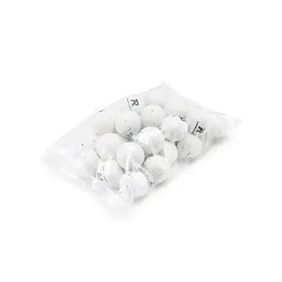 | |
| Weight: 3.2g Damage: 20 HP Cost: 10 rounds for 10 Gold Heat: 10 per projectile fired | Weight: 41g Damage: 200 HP Cost: 1 round for 10 Gold Heat: 100 per projectile fired |
Table A-2: Projectiles Overview
A-3 Referee System Overview
The competition stipulates that all robots must install the following referee system components in order to ensure compliance with all stipulated rules and for the game mechanism to function as intended. To avoid schedule delays during the competition, it is mandated that any referee component needs to be replaced within a stipulated amount of time (<5 minutes)
| Component | Official schematic | Function and requirements |
|---|---|---|
| Main Controller Module | 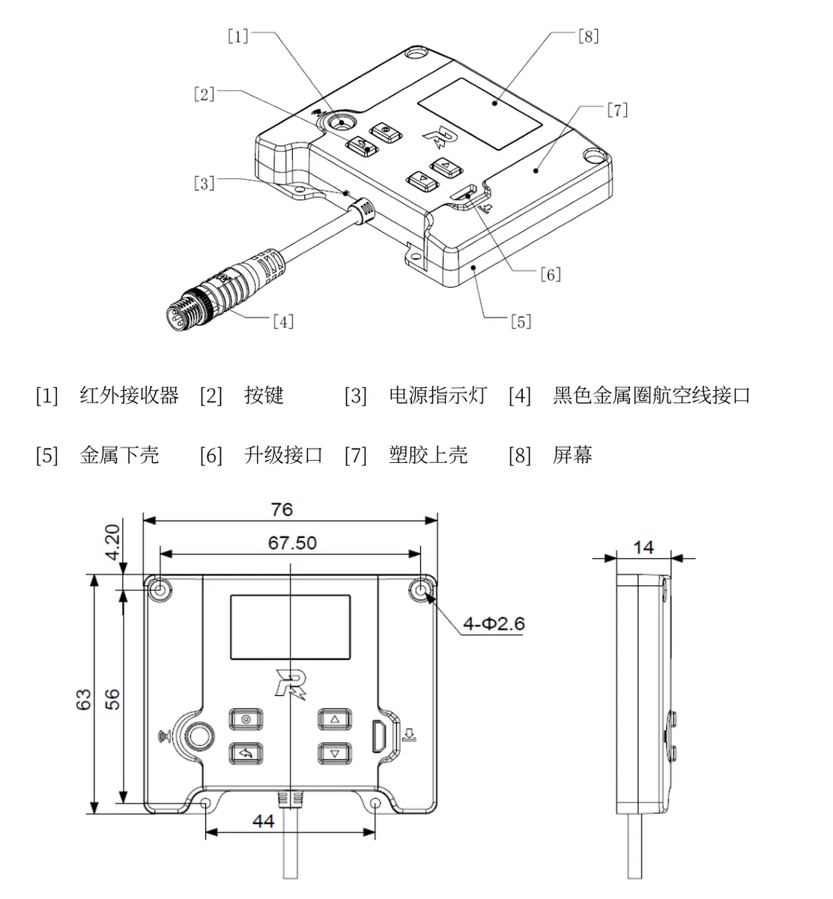 | The core referee-system controller. Monitors system status and provides wireless communication with the competition server, status display and user controls. The main controller module must not come in contact with any magnetic or metallic materials in the following exclusion zones 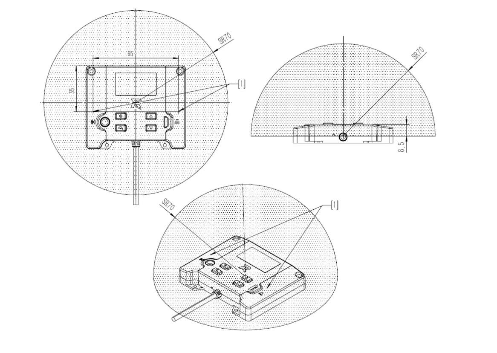 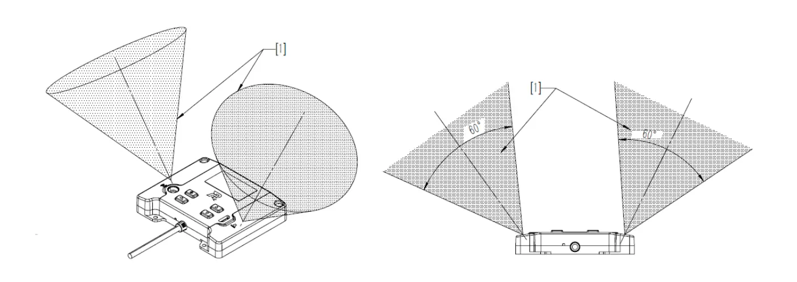 |
| Power Management Module | 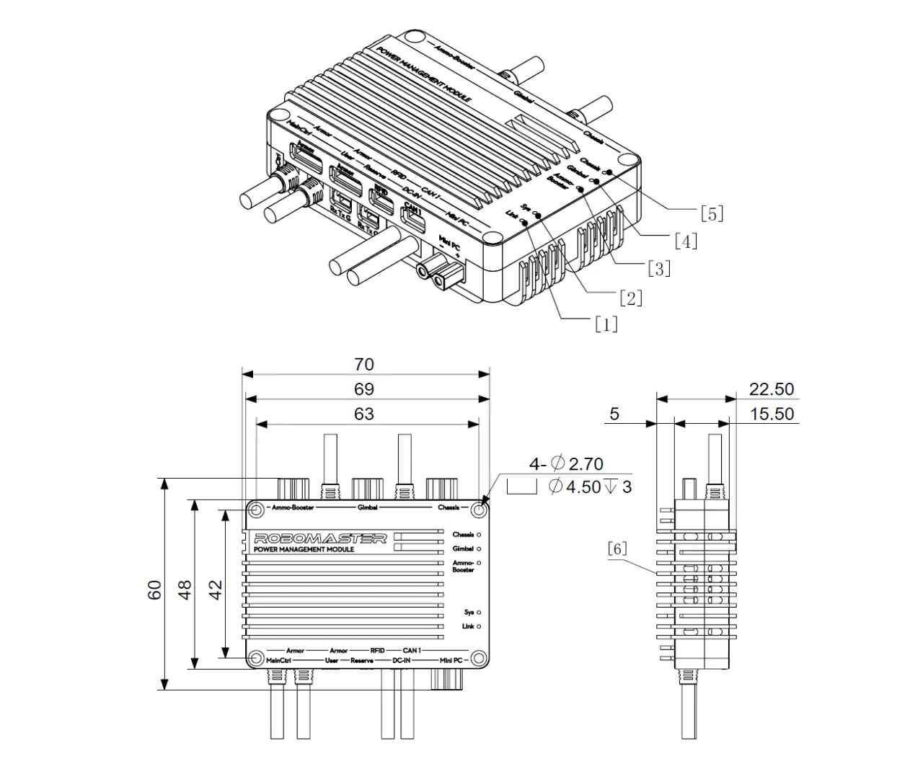 | Controls power to chassis, gimbal and 42 mm launcher, forwards referee data and measures power consumption of various systems in the robot. Chassis-powered motors must pass through its monitoring. This module cuts power to parts of the robot during rule violations or when certain conditions are met (robot is destroyed or robot is out of ammo) |
| Light Bar Module | 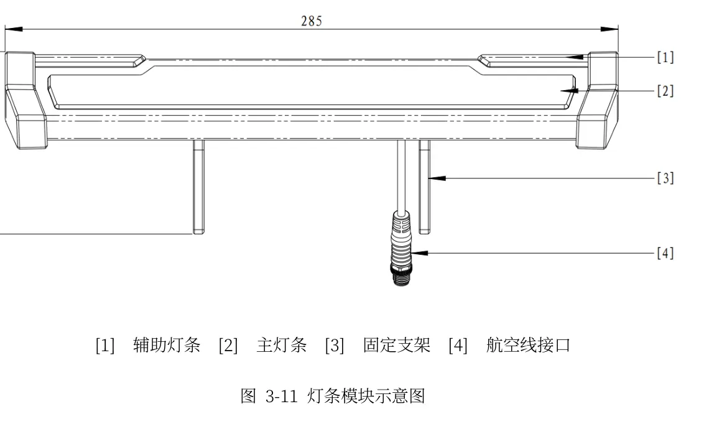 | LED indicator which displays red/blue team, remaining HP, active buffs and referee-module offline/fault states. |
| Small Armor Modules 4 required | 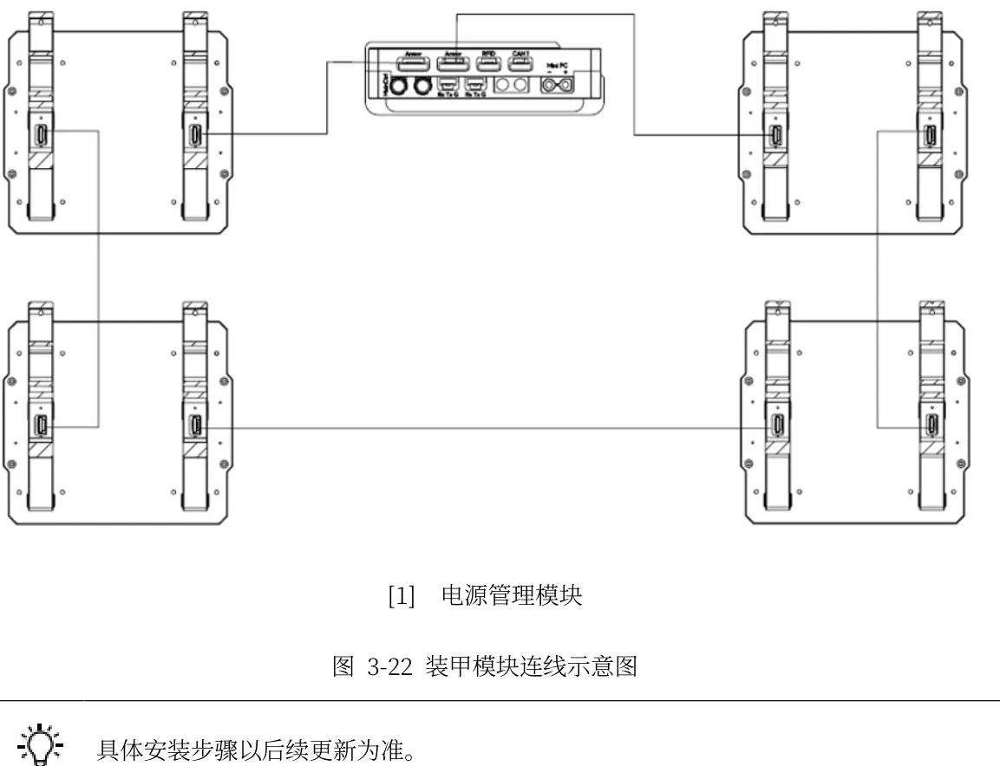 | Four impact-detection modules mounted around the robot, oriented toward +X, −X, +Y and −Y. Detects registered projectile hits and impacts for damage accounting. The armor modules must be secured on the robot and cannot deflect more than 2.5 degrees when a 60N force is applied 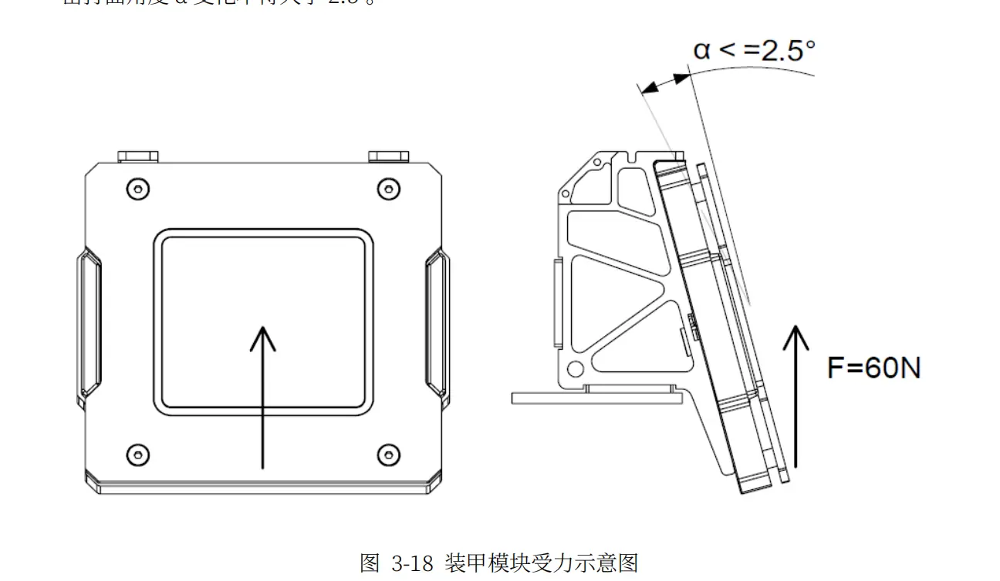 |
| Camera Transmission Module (TX) | 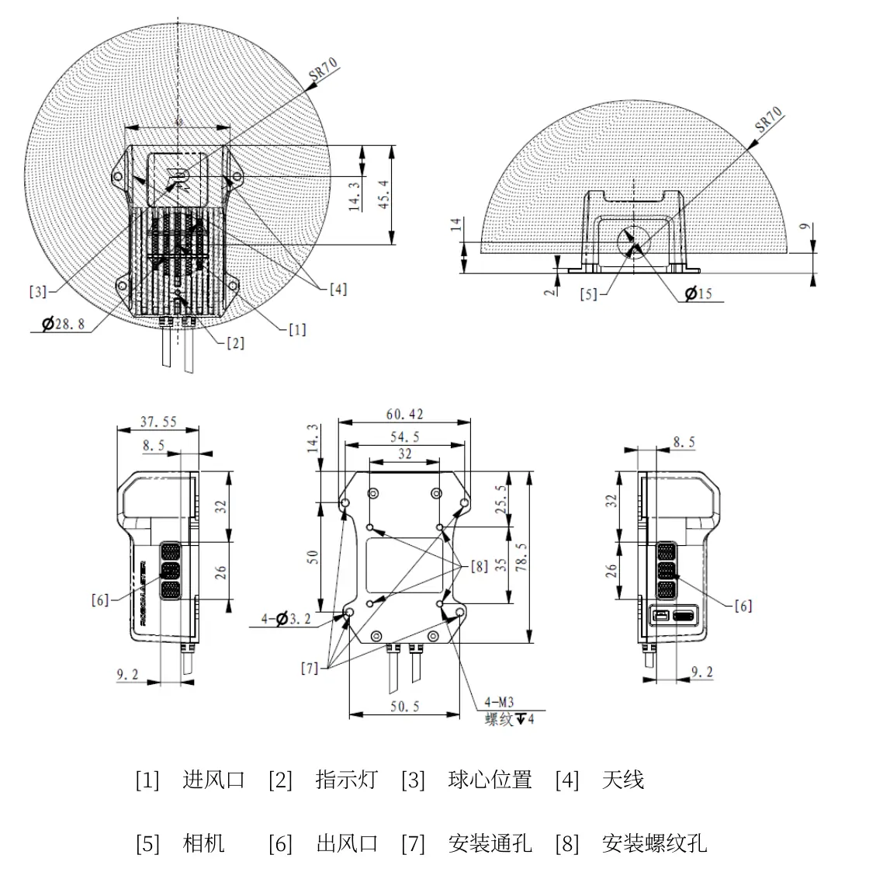 | Captures forward-facing video and transmits the operator’s first-person view to the receiver in the operator room. Also carries robot-control/data links. |
| RFID Field Interaction Module | 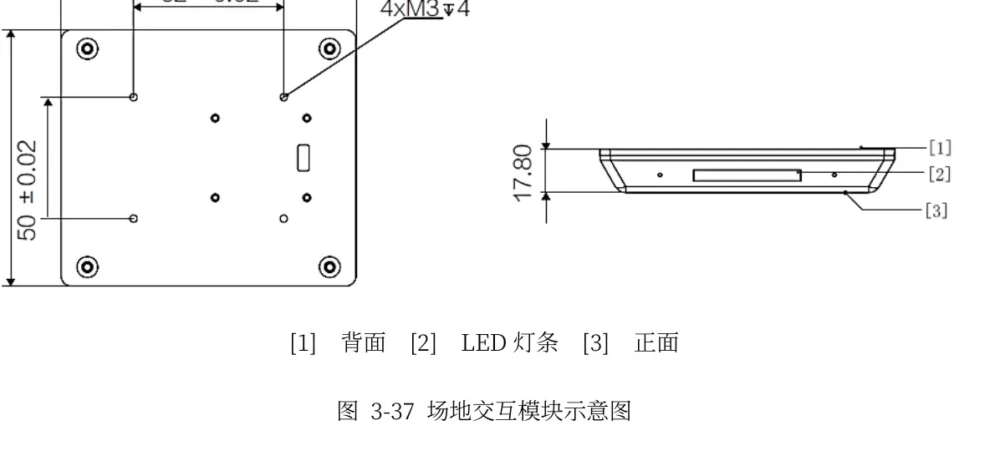 | Reads/communicates with field-interaction cards to activate supply, control-area and other field functions. |
| 42 mm Speed Measurement Module 1 × detachable launcher module | 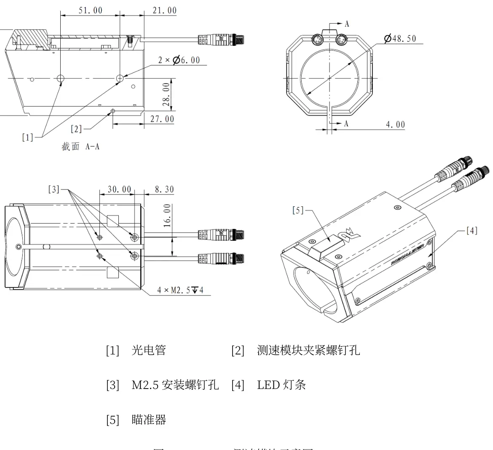 | Measures fired 42 mm projectile muzzle velocity and records firing events used for shooting heat and penalties. Must be mounted at the launcher exit after projectile acceleration. This module is part of the modular 42mm launcher which must be attached onto the robot after the start of the match |
Table A-3: Referee System Overview
Appendix B: Calculations
B-1 Chassis Power Calculations
Note: Current values shown below assume 24 V and idealized equal allocation of 50 W. They are illustrative only and must not be used as motor ratings; measured current depends on drive conditions, controllers and referee-system power accounting.
Idealized electrical relation: I = P/V = 50 W / 24 V ≈ 2.08 A total. Equal distribution would give 1.04 A per wheel drive motor (two motors) or 0.52 A per motor (four motors). These do not represent measured current, torque or drive efficiency.
B-2 Landing and Chassis Geometry Calculations
Nominal leg travel: 405 mm − 135 mm = 270 mm. Step requirement: 200 mm. Geometric margin: 70 mm. Workstation design envelope in presentation: 650 × 450 × 400 mm (L × W × H).
Maximum central chassis width: 600 mm − 2(153.41 mm) = 293.18 mm (not including clearances).
Estimated average landing reaction: F = mg + mgh/s = 25(9.81)(1 + 0.20/0.10) = 735.75 N. Desired 2× load case = 1,471.5 N; reported FEA input = 1,400 N, or ≈1.90× nominal average load.
Rectangular-tube bending illustration: I = [30(20³) − 28(18³)]/12 = 6,392 mm⁴. A 30 × 2 mm flat plate gives I = 30(2³)/12 = 20 mm⁴. This comparison is not mass-normalized.
Storage volume: 186 × 120 × 111 = 2,477,520 mm³. Assumed effective fill = 0.64(2,477,520) = 1,585,613 mm³; at assumed 40,194 mm³ per projectile, theoretical continuous-volume estimate ≈39.4 rounds. Confirm actual projectile geometry and discrete packing. A sphere volume of 40,194 mm³ corresponds to a diameter of about 42.5 mm; verify against the actual projectile specification.
Appendix C: Detailed Concept Evaluation Criteria
The following qualitative criteria and module boundaries support the concept-screening scores summarized in Section 5. Scores require prototype validation.
| Feature | Weightage | Rationale |
|---|---|---|
| Reliability | 30% | Ability to reliability grab the launcher every match is critical to robot performance |
| Grabbing Speed | 30% | 60 s attachment is a project performance target, not a stated mandatory competition limit; faster attachment permits earlier use. |
| Mechanical Complexity (1- Complex, 5 Not Complex) | 20% | Due to the short development runway, mechanical complexity affects whether the heavy robot is ready for the Final Assessment. This includes whether a separate controller is required. |
| Weight and space | 10% | Mechanism should not seriously affect the balancing ability of the robot and should not interfere with the robot’s leg movements. |
| Ease of Operation | 5% | Mechanism should be easy for the pilot to operate |
| Alignment Tolerance | 5% | Whether severely affected by launcher and robot orientation. Relatively less critical as both robot and launcher can be positioned freely at start of round |
Table C-1: Grabbing Mechanism Evaluation Criteria
| Feature | Weightage | Rationale |
|---|---|---|
| Attachment Reliability | 30% | Ability to attach reliably to the rest of the robot |
| Electrical Complexity (1- High Complexity, 5- Low Complexity) | 20% | Less electrical components on the launcher means less electrical connections are required when attaching the launcher. |
| Weight | 30% | Mechanism should be as light as possible to reduce complexity of grabbing mechanism |
| Projectile feeding reliability | 20% | Whether the launcher feeds and fires projectiles reliably |
Table C-2: Launcher Evaluation Criteria
Launcher-Only Module (Speed Monitor + Flywheel) | Launcher Module with feedpath (Speed Monitor + Flywheel + Pitch + Feedpath) | Self-contained Launcher Module (Speed Monitor + Flywheel + Feedpath + Pitch + Projectile Storage) |
|---|---|---|
| Contains only the projectile acceleration and speed measurement components. Feeding and aiming mechanisms remain on the robot. | Incorporates pitch axis and projectile feedpath, but projectiles are stored on the chassis | Incorporates projectile storage, feeding, pitch adjustment and firing within one detachable assembly. |
Table C-3: Launcher Architecture Descriptions